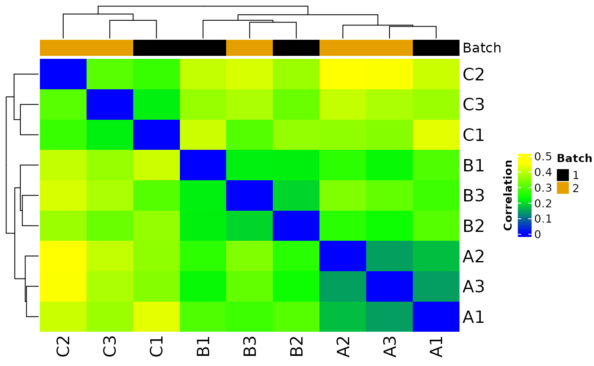
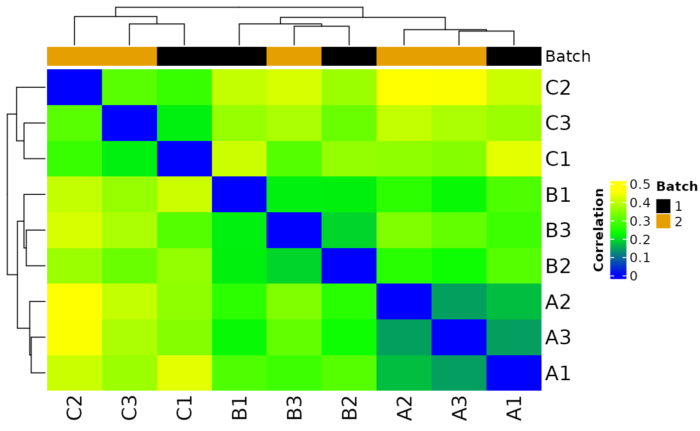

library(MOSuite)
library(dplyr)
#>
#> Attaching package: 'dplyr'
#> The following objects are masked from 'package:stats':
#>
#> filter, lag
#> The following objects are masked from 'package:base':
#>
#> intersect, setdiff, setequal, unionRENEE dataset
# replace these lines with the actual paths to your files
gene_counts_tsv <- system.file("extdata",
"RSEM.genes.expected_count.all_samples.txt.gz",
package = "MOSuite"
)
metadata_tsv <- system.file("extdata", "sample_metadata.tsv.gz",
package = "MOSuite"
)
# create multi-omic object
moo <- create_multiOmicDataSet_from_files(
sample_meta_filepath = metadata_tsv,
feature_counts_filepath = gene_counts_tsv
)
#> Rows: 58929 Columns: 6
#> ── Column specification ────────────────────────────────────────────────────────
#> Delimiter: "\t"
#> chr (2): gene_id, GeneName
#> dbl (4): KO_S3, KO_S4, WT_S1, WT_S2
#>
#> ℹ Use `spec()` to retrieve the full column specification for this data.
#> ℹ Specify the column types or set `show_col_types = FALSE` to quiet this message.
#> Rows: 4 Columns: 2
#> ── Column specification ────────────────────────────────────────────────────────
#> Delimiter: "\t"
#> chr (2): sample_id, condition
#>
#> ℹ Use `spec()` to retrieve the full column specification for this data.
#> ℹ Specify the column types or set `show_col_types = FALSE` to quiet this message.
head(moo@counts$raw)
#> # A tibble: 6 × 5
#> gene_id KO_S3 KO_S4 WT_S1 WT_S2
#> <chr> <dbl> <dbl> <dbl> <dbl>
#> 1 ENSG00000121410.11 0 0 0 0
#> 2 ENSG00000268895.5 0 0 0 0
#> 3 ENSG00000148584.15 0 0 0 0
#> 4 ENSG00000175899.14 0 0 0 0
#> 5 ENSG00000245105.3 0 0 0 0
#> 6 ENSG00000166535.20 0 0 0 0
head(moo@sample_meta)
#> # A tibble: 4 × 2
#> sample_id condition
#> <chr> <chr>
#> 1 KO_S3 knockout
#> 2 KO_S4 knockout
#> 3 WT_S1 wildtype
#> 4 WT_S2 wildtype
head(moo@annotation)
#> # A tibble: 6 × 2
#> gene_id GeneName
#> <chr> <chr>
#> 1 ENSG00000121410.11 A1BG
#> 2 ENSG00000268895.5 A1BG-AS1
#> 3 ENSG00000148584.15 A1CF
#> 4 ENSG00000175899.14 A2M
#> 5 ENSG00000245105.3 A2M-AS1
#> 6 ENSG00000166535.20 A2ML1
moo %<>%
clean_raw_counts() %>%
filter_counts(
group_colname = "condition",
label_colname = "sample_id",
minimum_count_value_to_be_considered_nonzero = 1,
minimum_number_of_samples_with_nonzero_counts_in_total = 1,
minimum_number_of_samples_with_nonzero_counts_in_a_group = 1,
) %>%
normalize_counts(
group_colname = "condition",
label_colname = "sample_id"
)
#> * normalizing filt counts
#> * filtering clean counts
#> * cleaning raw counts
#> Not able to identify multiple id's in gene_id
#> Columns that can be used to aggregate gene information gene_id
#> Aggregating the counts for the same ID in different chromosome locations.
#> Column used to Aggregate duplicate IDs: gene_id
#> Number of rows before Collapse: 58929
#> no duplicated IDs in gene_id
#> Number of features after filtering: 291
#> Total number of features included: 291
#> Sample columns: KO_S3, Sample columns: KO_S4, Sample columns: WT_S1, Sample columns: WT_S2
moo@counts$norm$voom %>% head()
#> gene_id KO_S3 KO_S4 WT_S1 WT_S2
#> 1 ENSG00000215458.8 11.075196 12.348091 8.816153 10.004874
#> 2 ENSG00000160179.18 9.608634 12.770317 12.348091 12.236996
#> 3 ENSG00000258017.1 9.608634 8.816153 8.816153 8.816153
#> 4 ENSG00000282393.1 8.816153 9.608634 8.816153 8.816153
#> 5 ENSG00000286104.1 9.608634 8.816153 8.816153 8.816153
#> 6 ENSG00000274422.1 8.816153 9.608634 8.816153 8.816153NIDAP dataset
options(moo_print_plots = TRUE)
moo_nidap <- create_multiOmicDataSet_from_dataframes(
sample_metadata = as.data.frame(nidap_sample_metadata),
counts_dat = as.data.frame(nidap_raw_counts)
) %>%
clean_raw_counts() %>%
filter_counts(group_colname = "Group") %>%
normalize_counts(group_colname = "Group") %>%
batch_correct_counts(
covariates_colname = "Group",
batch_colname = "Batch",
label_colname = "Label"
)
#> * batch-correcting norm-voom counts
#> * normalizing filt counts
#> * filtering clean counts
#> * cleaning raw counts
#> Not able to identify multiple id's in GeneName
#> Columns that can be used to aggregate gene information GeneName
#> Aggregating the counts for the same ID in different chromosome locations.
#> Column used to Aggregate duplicate IDs: GeneName
#> Number of rows before Collapse: 43280
#> no duplicated IDs in GeneName
#> Number of features after filtering: 7943


#> Total number of features included: 7943
#> Warning: ggrepel: 1 unlabeled data points (too many overlaps). Consider
#> increasing max.overlaps


#> Sample columns: A1, Sample columns: A2, Sample columns: A3, Sample columns: B1, Sample columns: B2, Sample columns: B3, Sample columns: C1, Sample columns: C2, Sample columns: C3
#> Found2batches
#> Adjusting for2covariate(s) or covariate level(s)
#> Standardizing Data across genes
#> Fitting L/S model and finding priors
#> Finding parametric adjustments
#> Adjusting the Data
 

#> The total number of features in output: 7943
#> Number of samples after batch correction: 10